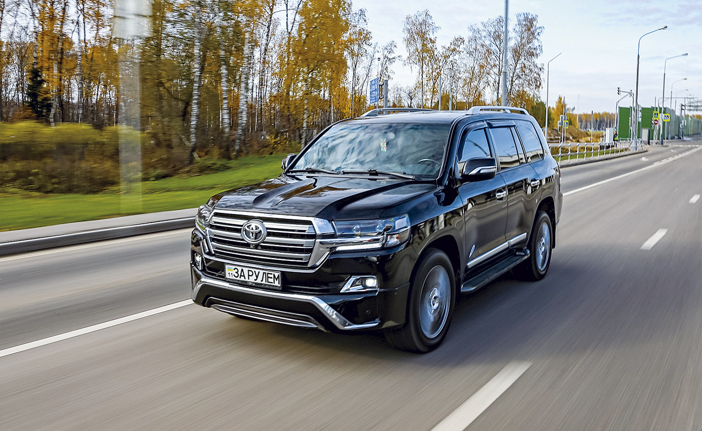
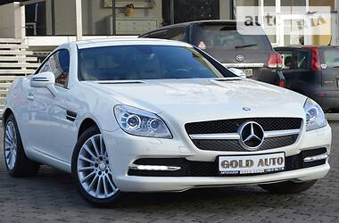

Toyota Land Cruiser 200 2014
Описание: ЦЕЛЫЙ - 100% БЕЗ ПОДКРАСОВ - 100% ПРОБЕГ ОРИГИНАЛЬНЫЙ - 100% Официальный автомобиль. Все ТО проводились по регламенту, на официальном сервисе Тойота. Состояние Гаражное хранение • Сервисная книжка • Не бит • Не крашен
Описание: ЦЕЛЫЙ - 100% БЕЗ ПОДКРАСОВ - 100% ПРОБЕГ ОРИГИНАЛЬНЫЙ - 100% Официальный автомобиль. Все ТО проводились по регламенту, на официальном сервисе Тойота. Состояние Гаражное хранение • Сервисная книжка • Не бит • Не крашен

Mercedes-Benz E 350 AMG 2010
Официальный автомобиль! один хозяин, первая регистрация! без единого подкраса, бампера в родной краске обслуживание у официального дилера, пробег 100% родной. состояние нового автомобиля! AMG обвес акустика HARMAN/KARDON подогрев и вентиляция сидений память сидений автоматический дальний свет натуральная кожа NAPPA сиденья с боковой поддержкой и подкачкой. панорамная крыша с люком датчики давления в колЁсах. машина выходного дня, зимой не ездила, хранилась в гараже!
Официальный автомобиль! один хозяин, первая регистрация! без единого подкраса, бампера в родной краске обслуживание у официального дилера, пробег 100% родной. состояние нового автомобиля! AMG обвес акустика HARMAN/KARDON подогрев и вентиляция сидений память сидений автоматический дальний свет натуральная кожа NAPPA сиденья с боковой поддержкой и подкачкой. панорамная крыша с люком датчики давления в колЁсах. машина выходного дня, зимой не ездила, хранилась в гараже!
 BMW 528 X-DRIVER 2012
BMW 528 X-DRIVER 2012 Описание: Автомобиль полностью весь в родной краске ничего не крашено ( что для бмв большая редкость ) по технике тоже все обслужено , машина Полный привод ( хдрайв) , белый кожаный салон , расход по городу 10, 5 трасса 9 , машина сел и поехал !!! Состояние Сервисная книжка • Первый владелец • Не бит • Не крашен
 Lexus IS 250 Официал 2013
Lexus IS 250 Официал 2013 Описание: Куплен в официальном салоне. Сервисная книга. Оригинальный пробег. Состояние на 5+. Очерь яркий, комфортный автомобиль. Обслужен по регламенту. Без вложений. Новая зимняя резина. Состояние Сервисная книжка • Не бит